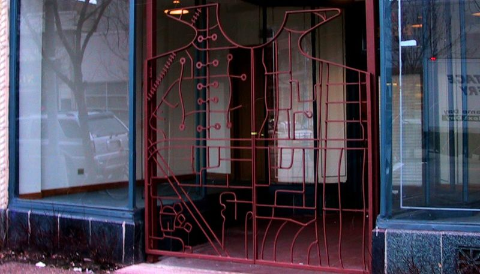

Sculptural Firebowls— what I'm known for
The power of fire and the strength of steel fused in elemental elegance to create sculptural fine art reborn from the ashes of industry.
I make sculpture from scrap industrial steel, cutting by hand with a plasma torch at 45,000° Farenheit. That's 4.5 times as hot as the surface of the Sun or the Earth's core.
My Sculptural Firebowls are intended to have an immediate visual appeal as well as providing a story, meaning, and social interaction. They offer an opportunity to gaze into the fire and connect with the human questions that have enticed every imagination since we first gathered around a captive flame over a million years ago.
I created the first Great Bowl O' Fire on May 30, 2005. I had no idea at the time that it would become the work I was most known for. In the seven years since I created the first Great Bowl O' Fire, my art has set the world aflame— I've shipped over a thousand Sculptural Firebowls to all 50 states and 12 countries.

Artist's Statement— how I make art and why
If my job as an artist is to fill the world with "more things," I feel it is equally important that I reclaim materials from the waste stream to make space for my work.
Surprise and beauty are a good start, but I expect more and so should you. As an artist and designer, I am committed to sustainable design practices and materials in the following ways:
I work primarily with recycled or re-used materials. This is the best way I know to minimize my impact on natural resources, climate and the environment. I feel creative re-use has the potential to spark new ways of looking at the world… if one thing can be turned into another, what else can we change? Successful recycled art and design encourages creativity in others— it's alchemical, magical, subversive, and transformative by nature.
I design for permanence. The earliest surviving iron artifacts we've found date back to 37,000 years ago… I would like my work to hold to such a standard. Most of my objects will last generations with little or no maintenance. I try to create objects that will never go out of style by drawing from primal metaphor and classical elements of design that speak to what it means to be human and alive.
Because most of my designs are made from recycled material, I shop for supplies at the end-point of consumerism. I see all the manufactured items that are discarded after a short period of use and I design to avoid the mistakes that led to their early demise.
I design for functionality. My work is intended to be useful as well as beautiful. I enjoy the practical aspect of art and feel that engineering is as critical as ingenuity in the creation of solid works of art. Designing for function often means that the most important area to consider is the space around your creation, not the space your art occupies. A chair is the best example— there are thousands of beautiful chairs, but the only comfortable chairs are those designed to fit the form of a relaxed human body. If a work of art is to be valued for centuries, I feel it must consider the most elemental aspects of how people will interact with it.
|
|
Quick facts: Name: Leslie Gladwyn |